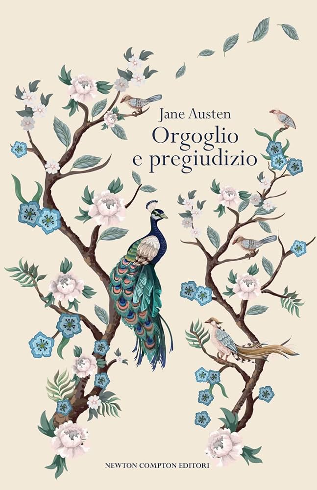

Nell'Inghilterra di fine Settecento, la famiglia Bennet e le sue cinque figlie si trovano al centro delle rigide convenzioni sociali del proprio tempo, dove un buon matrimonio è spesso l'unica strada verso la sicurezza. Elizabeth Bennet, intelligente e dalla lingua tagliente, si scontra fin da subito con l'orgoglioso e riservato Mr. Darcy, in un rapporto segnato da fraintendimenti, pregiudizi reciproci e un'attrazione che nessuno dei due è disposto ad ammettere. Con la sua ironia sottile, Austen costruisce uno dei romanzi più amati di sempre sull'amore, l'orgoglio e la capacità di rivedere i propri giudizi.
Ancora non l'ho letto, quindi per ora posso solo offrirti la copertina e la mia buona intenzione.
Ripassa più avanti.
Le frasi più belle di questo libro dormono ancora tra le sue pagine, in attesa che io le scovi.